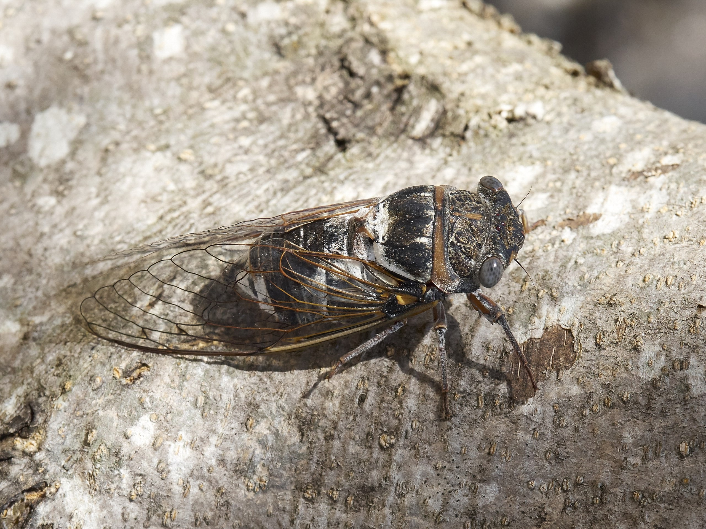

Sus tonos apagados y su inmovilidad ayudan a que su cuerpo se confunda con la corteza de los árboles.
Las ninfas pasan parte de su desarrollo bajo tierra, alimentándose de la savia de las raíces. Al llegar a adultas, las cigarras viven sobre los árboles y los machos producen cantos para atraer pareja.
Las cigarras comunes viven en regiones de clima templado y tropical de todo el mundo. Se alimentan de savia, que succionan de las plantas.
¿Cómo se ocultan?
Sus patrones marrones, grises, negros y verdes replican el color y las irregularidades de ramas y troncos. Pueden permanecer inmóviles durante horas.
Sentidos
